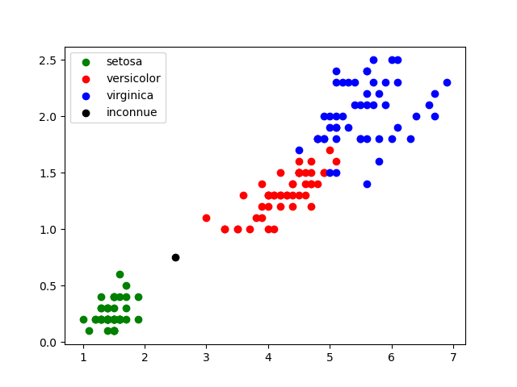

Algorithme des plus proches voisins#
Introduction#
Dans ce chapitre, nous allons travailler avec un algorithme d'apprentissage automatique, souvent appelé un algorithme de machine learning. Le principe de ces algorithmes est d'utiliser un grand nombre de données afin "d'apprendre à la machine" à résoudre des problèmes.
Bien que cette idée d'apprentissage automatique date de la fin des années 1950, le machine learning a pris toute son importance avec la montée en puissance du Big Data, offrant des quantités de données à analyser sur d'innombrables sujets. À noter aussi l'importance des stratégies mises en place par les GAFAM (Google, Apple, Facebook, Amazon et Microsoft) afin de récupérer un grand nombre de données concernant leurs clients. Ces données sont très souvent utilisées pour alimenter des algorithmes de machine learning.
Historique
Trouver sur le web les dates des événements marquants de l'histoire de l'intelligence artificielle qui sont donnés ci-dessous dans le désordre :
- test de Turing
- victoire d'Alpha-Go sur le meilleur joueur humain de jeu de Go
- premier neurone artificiel imaginé par Mc Culloch et Pitts
- victoire de Watson (IBM) sur les meilleurs joueurs humains au jeu Jeopardy
- victoire de Deep Blue (IBM) sur le champion du monde d'échec Gary Kasparov
- invention du perceptron par Frank Rosenblatt
- conférence de Darmouth
- prix Turing décerné à Yann Le Cun pour ses travaux sur le Deep Learning
Problème de classification des iris#
Les données d'Edgar Anderson relatives aux différentes espèces d'iris
En 1936, Edgar Anderson a collecté des données sur 3 espèces d'iris : "iris setosa", "iris virginica" et "iris versicolor". Pour chaque iris étudié, Anderson a mesuré la largeur et la longueur des sépales, la largeur et la longueur des pétales. Par souci de simplification, nous nous intéresserons uniquement à la largeur et à la longueur des pétales. 50 de ces mesures se trouvent dans le fichier iris.csv téléchargeable depuis le groupe de travail sur l'ENT. Il est inclus également dans le fichier Capytale de l'activité. Ce jeu de données présente aujourd'hui un intérêt essentiellement pédagogique. En effet, il est exclusivement utilisé par des personnes désirant s'initier aux algorithmes de machine learning.
Les valeurs du champ "species"("espèces")sont 0 pour l'espèce "setosa", 1 pour "virginica" et 2 pour"versicolor".
Nous allons dans un premier temps réaliser une représentation graphique des données contenues dans le fichier à l'aide du script python suivant :

On constate que ces points sont regroupés par espèces d'iris.
Exercice 1 :
- Ouvrir l'activité Capytale n° : c0d5-1738910 ;
- Copier/coller le code précédent et exécuter-le.
- Modifier ce code et observer.
Considérons maintenant une iris dont les pétales mesurent 0,5 cm de large et 2 cm de long.
Comment déterminer l'espèce à laquelle cette iris appartient ? Afin de répondre à cette problématique, nous allons placer cette nouvelle donnée sur le graphique:
Exercice 2 :
Réaliser sur cette activité capytale le code pour insérer l'iris inconnu.

Dans ce cas, on voit clairement qu'il y a de fortes chances pour que l'iris soit de l'espèce "setosa".
Cependant, il existe des cas où il est beaucoup plus difficile de répondre, par exemple pour une iris dont les pétales mesurent 0,75 cm de large et 2,5 cm de long.

Afin de déterminer si l'iris appartient à l'espèce "sétosa" ou à l'espèce "virginica", nous allons devoir utiliser l'algorithme des k plus proches voisins.
Algorithme des k plus proches voisins#
Principe#
- On calcule la distance entre le point correspondant à l'iris d'espèce inconnue et chaque point correspondant à chaque "iris" ;
- On sélectionne les \(k\) distances les plus petites (les \(k\) plus proches voisins) ;
- Parmi les k plus proches voisins, on détermine quelle est l'espèce majoritaire, et on attribue à notre iris inconnu cette espèce majoritaire.
Prenons \(k = 3\) :

Les 3 plus proches voisins sont deux "setosa" et un "virginica". D'après l'algorithme des "k plus proches voisins", notre iris inconnue appartient à l'espèce "setosa".
Exemple avec les iris d'Anderson#
La bibliothèque Python Scikit Learn propose un grand nombre d'algorithmes lié au machine learning (c'est sans aucun doute la bibliothèque la plus utilisée en machine learning). Parmi tous ces algorithmes, Scikit Learn propose l'algorithme des k plus proches voisins.
Première étape
Importer la bibliothèque:
Deuxième étape
Recopier le programme 1
Troisième étape
Insérer le programme 2 à la ligne 14 du programme 1 :
Exercice 3 :
Sur cette activité Capytale, réaliser le script afin de déterminer l'espèce de l'iris inconnu.
Exercice 4 :
Le résultat dépend-t-il du nombre de voisins ? Pour répondre à cette question, relancer le script en prenant toujours le même iris inconnu mais en faisant varier le nombre de voisins. Que constatez-vous ?
Comment peut-on calculer une distance en informatique ?#
Soit deux points : A (58,65) et B (80,58).
On peut calculer la distance AB de plusieurs façons, comme par exemple :
- La distance euclidienne qui correspond à celle de la règle graduée :
\(AB = \sqrt{(x_B - x_A)^2 + (y_B-y_A)^2} = \sqrt{(80-58)^2 + (58-65)^2}\approx 23,087\)
-
La distance de Manhattan qui correspond à la longueur du chemin parcouru pour aller de A à B en se déplaçant le long des arêtes d'un quadrillage généré par un repère orthonormé du plan, comme dans le plan d'une ville où les rues se coupent à angle droit :
\(AB = |x_B - x_A| + |y_B - y_A| = |80-58| +|58-69|\)
Remarque : nous pouvons généraliser à 3, 4 ou \(n\) dimensions.
Exercice 4
On souhaite programmer une fonction donnant la distance la plus courte entre un point de départ et une liste de points. Les points sont tous à coordonnées entières. Les points sont donnés sous la forme d'un tuple de deux entiers. La liste des points à traiter est donc un tableau de tuples.
On rappelle que la distance entre deux points du plan de coordonnées \((x;y)\) et \((x';y')\) vérifie la formule :
\(d^2=(x-x')^2+(y-y')^2\)
Compléter le code des fonctions distance_carre et point_le_plus_proche fournies ci-dessous pour qu’elles répondent à leurs spécifications.